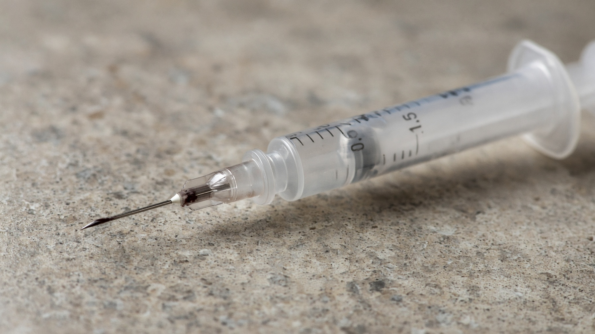
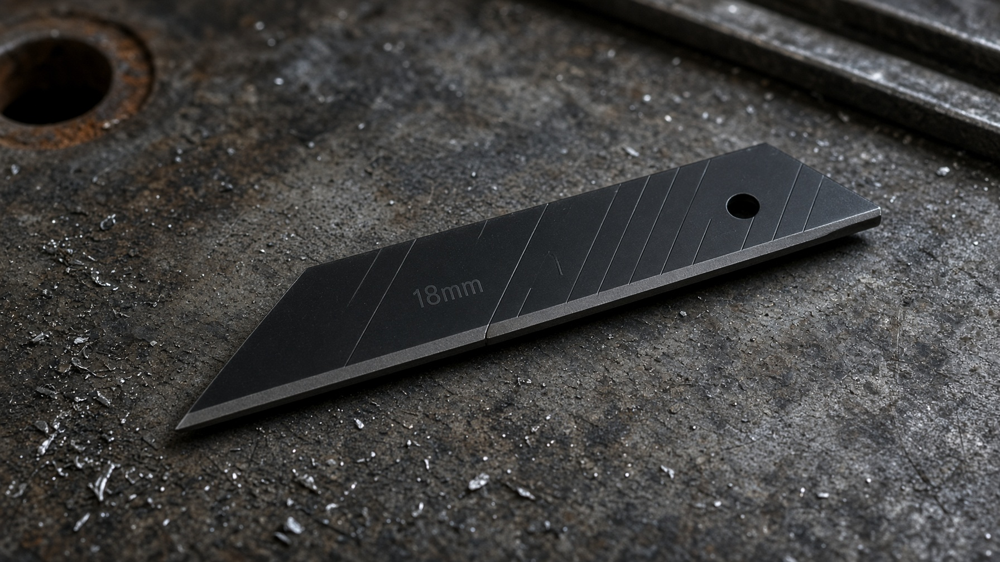
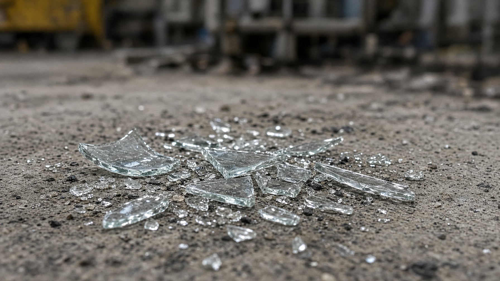

The story
Exposure is a risk… for everyone
Jacob is collecting workplace trash.
Jacob has never handled a syringe
He’s never given an injection or handled a syringe. But in this training scenario, a used needle has been discarded in the bag he is about to pick up.
When he grabs the bag, the needle sticks him.
Even though the person who used the needle has already moved on, Jacob is the person left dealing with the consequences.
His exposure was caused by someone else’s decision.
Let’s go back to the decision.
Rewind the scene to see what happened before Jacob is exposed.
Chris uses a syringe at work
Chris takes his insulin during his shift. When he finishes, he is left holding a used syringe.
Chris decided to toss his syringe in the trash
Chris knew the needle should be disposed of properly, but he couldn’t find a sharps container nearby and figured “it’ll be fine.”
Later, Jacob picked up the bag.
The problem wasn’t Chris taking his medication. It was a used sharp entering general waste that another person would have to handle.
A shortcut can be brief. The hazard it creates can outlast the task.
Before you can handle a sharp safely, you have to recognize one.
What counts as a sharp
It doesn’t have to look medical to be a sharp.
A sharp is an object that can puncture or cut the skin.
A needle is an obvious example. A loose blade or broken glass can also create a cutting or puncture hazard. The safe-handling plan needs to begin before using a sharp instrument—or starting a broken-glass cleanup.
A used medical needle can retain blood after use. An injury involving a contaminated sharp can therefore create an exposure to bloodborne pathogens, including hepatitis B, hepatitis C, and HIV.
The cutting hazard and the contamination hazard are related, but they are not the same thing.



Spotting a hazard is the easy part. Here is what happens when it’s missed.
Sharps injuries at one waste-disposal company
Published 2008 · each square is one recorded injury, not one person
Source: published 2008 study (OUP Academic). One company’s records, not a national estimate. The study groups improper closure and overfilling together.
of records answering the original-user question identified the injured worker as someone other than the original user.
Source: AOEC · 2024 EPINet report, 39 hospitals. A separate dataset, not combined with the study.
The evidence
Researched additionHow frequent are sharps injuries?
One company, one study
In 2008, researchers published a study of sharps injuries at one specialist clinical-waste disposal company, the kind of company that takes in other workplaces’ waste and processes it.
40 recorded sharps injuries
Each square is one injury, not one person.
Of those 40…
34 involved needles incorrectly discarded in plastic sacks intended for soft waste.
6 involved needles from improperly closed or overfilled sharps boxes.
The injured person was not always the original user.
In the 2024 EPINet report covering 39 hospitals, 200 of the 844 records answering the original-user question—23.7%—identified the injured worker as someone other than the original user.
This does not establish that all those injuries resulted from improper disposal.
The problem is well-defined. Let’s look at how to solve it.
Activate the device’s built-in safety feature. In this scenario that is the built-in safety sheath, which is not the same as replacing a loose cap.
The procedure
The safest disposal starts before use.
Return to Chris’s workspace—this time before the task begins.
The first question is not, “Where can I put this afterward?” It is, “How will I handle and dispose of it safely?”
Plan the destination.
Identify the designated sharps container before using the needle or sharp instrument. Consider an appropriate needle alternative when one is available for the task. Make disposal part of the setup, not a problem to solve afterward.
Activate the applicable safety feature.
Use the device’s safety feature when provided. In the scenario shown here, that means activating the needle’s built-in safety sheath—not replacing the loose needle cap.
Contain the sharp.
Place the used sharp immediately into the designated sharps container.
For routine disposal of the used needle shown here, do not recap, bend, break, or separate it from the syringe. Wrapping it in a paper towel or putting it in a plastic bag does not provide an acceptable temporary disposal method.
Plan the disposal. Use the safety feature. Complete the containment.
BeforeThe needle is exposed.
AfterThe built-in guard covers the needle.
Your device may work differently. Follow its instructions.
The right habit still needs the right equipment.
The equipment
A sharps container is not just a better trash can.
Its purpose is to contain the sharp, rather than leave the next person to avoid it.
Built to contain
For contaminated sharps, OSHA specifies containers that are puncture-resistant, leakproof on the sides and bottom, closable, and appropriately labeled or color-coded. They must be kept upright and positioned where they are accessible, as close as feasible to the area of use.
Puncture-resistant body.
Helps contain sharp objects.
Leakproof sides and bottom.
Helps contain liquids.
Appropriate labeling.
Identifies the hazardous contents.
Closure.
Allows the container to be secured for removal.
These are explanatory labels, not claims that the container eliminates every possible injury.
Thicker gloves are not a disposal plan.
Needles can penetrate gloves. Wearing them does not make it acceptable to put a used needle in general waste.
Protective equipment remains part of safe work, but it does not replace a suitable sharps container or the device’s safety features.
The same needle goes through every one.
Hand protection is only one layer. The container is what keeps you safe.
Beware: a container can have visible space and still be full Researched addition · CDC
A sharps container can have visible space above its marked fill line and still be ready for closure and replacement.
Use the marked line—not the amount of space that appears to remain—as the limit. Do not overfill it.
When replacement is needed, follow the facility’s process for closing and removing the container. Do not empty it yourself.
Now try it yourself.
Your turn
Work through three situations
A cap falls. A container is full. The cleanup is more complicated than expected. The safe response should still protect you—and the person who handles the waste after you. Choose a response in each situation. There is no timer, and you can change an answer at any time.
Complete the activity to continue
The rest of the article opens when you’ve finished the activity above.
0 of 3 complete
Back in the workplace, the next shift is starting.
The other ending
A different handoff in the same workplace
Return to the beginning.
Jacob approaches the waste bin.
Same framing. Same lighting. Same movement as the opening.
The needle never entered the trash bag.
This time, Chris planned the disposal before using the needle. He used the applicable safety feature and placed the device in the designated sharps container.
Not asking Jacob to spot a hidden sharp.
It’s preventing this sharp from becoming his hazard in the first place.
We can rewind a video. In the workplace, prevention has to happen earlier.
Your disposal decision becomes part of someone else’s working environment.
Keep this
Before your next task
Know the disposal route before you begin. Use an appropriate needle alternative when possible, activate applicable safety features, and place used contaminated sharps immediately in the designated container.
Do not substitute recapping, soft wrapping, or general waste for proper disposal. Do not assume protective gloves make those shortcuts safe.
Already had a needlestick or cut involving possible blood exposure? Researched addition · CDC
Wash the affected area with soap and water. Report the incident promptly and seek medical evaluation immediately. Do not wait until the end of the shift.
Supplementary immediate-response guidance, not a complete exposure-management protocol. Also reachable from the top bar at any point.